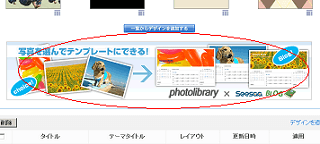

シーサーブログの壁紙カスタマイズ
シーサーブログのカスタマイズは、けっこう、壁紙で印象がだいぶ違ってきたりするものだと思います。
以前にも壁紙カスタマイズについての記事は書いたんですけど、どこかに埋もれてしまってわからなくなってしまったようです。
その記事ではテンプレートのことについてと、記事タイトルについて書いたんですけど、この記事ではシーサーブログの壁紙のカスタマイズについて書いてみたいと思います。
ネット上でブログ用の無料素材を検索するといろいろと出てきますが、このブログの場合、無料素材の夢幻華亭さんからもらってきました。
シーサーブログでダウンロードした壁紙を使用する際はこんな手順になりますが、ほかのブログサービスでもだいたいは同じような感じです。
- パソコンに画像を保存（画像の上で右クリックー画像を保存）
- 保存した画像を自分のブログにアップロード（記事投稿ーファイルマネージャー）
- アップロードした画像のＵＲＬをスタイルシート（デザインーデザイン一覧）に指定
アップロードした画像のＵＲＬはファイルマネージャーの画像の元ファイルというＵＲＬのことです。
スタイルシートでヘッダーならバナーのところ、フッターならフッター部分のバックグラウンドＵＲＬのところに差し込むといいです。
わたしのブログの場合、ヘッダーの部分にダウンロードしたさかなの画像をはりつけていますので、これはバナー部分のバックグラウンドＵＲＬにあたります。
#banner{
background-image:url(/image/ayu-850.jpg);
background-repeat:no-repeat;
background-position: 0px 0px;
height:90px;
color: #000000;
padding:10px 0px 0px 30px;
text-align: left;
}
こんな感じで保存して再構築すれば画像が表示されます。正しく表示されない場合はheightの高さをひろげたりするといいと思います。
ブログのどの部分がスタイルシートで同じ場所に対応するかについては、こちらの方に記事にしてます。
ヘッダーではなく、ブログの背景画像として設定する場合は body の部分に指定することになりますが、テキスト部分にも画像が表示されてしまう場合は、同時にcontainerの部分の背景を白に設定しておくといいです。
body {
background-image: url(
http://画像のurl);
background-repeat: repeat;
}
#container{
background-color:#ffffff;
}
背景画像にグラデーション素材を自分で作成して設定する方法はこちらを、、
ブログにグラデーションな背景画像の作り方
そのほか、シーサーブログではフォトライブラリーとコラボしてるんで、無料で壁紙画像を使用することができ、スタイルシートが自動的に出力されますので設定方法も割と初心者簡単です。

シーサーにログインした状態で、上の画像の箇所から入っていくと、画像の範囲などを選択するだけで、ブログのスタイルシートが出力されます。
無料素材の場合はどこも、直接リンクするのはタブーのようなので十分に気をつけた方がいいと思います。
- シーサーブログでフッターカスタマイズ
無料ブログのシーサーブログでいろいろやってるんですが、フッターの立場がいまいちわからないのでちょっとレイアウトを少しカスタマイズしてみました。 ブログのフッターといえば、やはり、コピーライトとかなん... - シーサーブログのヘッダー画像のカスタマイズ
シーサーブログ(seesaa blog)で壁紙の背景画像が簡単に変えられるようなのでちょっとカスタマイズしてみました。 テンプレート一覧のところにいつもあったフォトライブラリーというリンクですが、こ... - スタイルシートカスタマイズでブラウザ崩れ
シーサーブログではスタイルシートを個別に設定できるので、個別記事やカテゴリ欄、過去ログやトップページなどそれぞれ個別にカスタマイズできるようです。 シーサーブログ（Seesaa Blog）のカスタマ... - ブログの背景色を薄い白にカスタマイズ
今日はちょっと調べものがあっていろいろとネットサーフィンをしていました。最近思うのですが、rel-norrowってのはどうなんでしょうか。ページからの発リンク数が少ないと力が分散されずにそれぞれのペー... - CSSで初心者簡単ブログカスタマイズ方法
初めてブログを作る際は文字の大きさや行間などを自分好みにしようと思っても、どこをどう変更していいものやらさっぱりなんですが、スタイルシートの CSS の部分をブログカスタマイズするといいようなんです。...